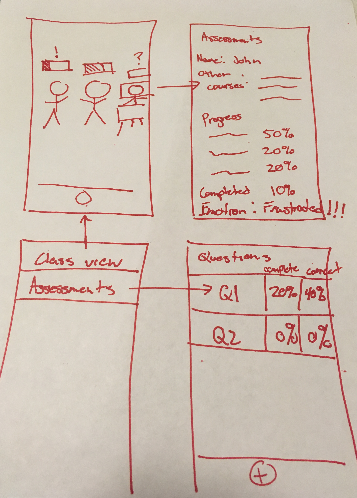
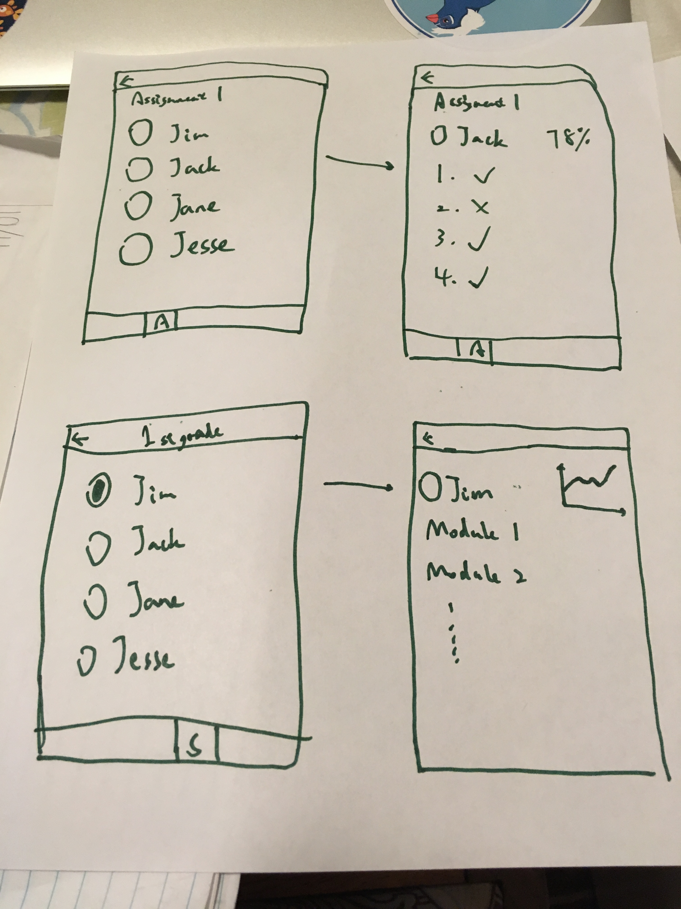
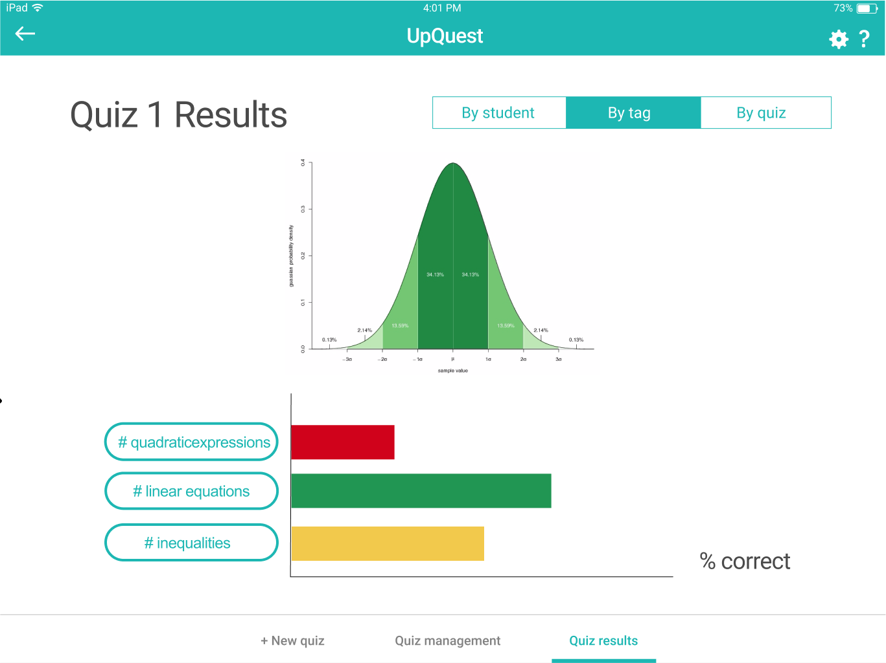

Role: founder, designer, and user tester
Teachers face a problem that they start the school year with limited information about the knowledge level of their students. In the remainder of the school year their students progress is tracked on an ad-hoc basis with quizzes. Our application serves to provide a method for teachers to give formative assessments to their students to understand the materials that they already know and what they need to teach. This would help to customize the learning experience for each classroom and each student.

All HMWs we came up with
We started by interviewing elementary and secondary school teachers about the pain points in their teaching. Some issues that came up frequently with our interviewees included: the vastly different knowledge levels among students, the difficulties in assessing students, too much time needed for lesson planning, and behavioral issues of the students. In general, teachers felt that they had so little time but so much work to be done. Thus, we explored various ways to frame the problems and came up with 3 “how-might-we”s: how might we get data on student’s knowledge levels? How might we let teachers search many lesson plans for key terms and ideas? How might we make students understand why they should focus on their current materials?

All solutions we came up with
We went on to explore potential solutions to the questions. We finally arrived at 3 most promising solutions addressing the first 2 questions.
Modular, standardized lesson plan format (HMW 1), Optical character recognition for physical lesson plans that teachers upload (HMW 1), and a gamified system to reward assessments (HMW 2).

Winner prototype
We created 3 experience prototypes and tested them on 3 teachers. The prototype that was most accepted was the gamified system to reward assessments. It consisted of a teacher screen and student screen. Teachers send assessments to their students and receive instant feedbacks of students’ knowledge levels. Our users found the prototype to be intuitive and useful, but also pointed out the difficulties in breaking down knowledge into this level of granularity, especially for liberal arts subjects.
Thus we narrowed down to the problem: how might we get data on student’s knowledge levels in order to help teachers plan their lessons more efficiently?
We first came up with 3 user tasks for the app: teachers giving assessments to students, students answering questions, and teachers checking results.
 
We sketched out series of storyboards and decided on a teacher screen on web and a student screen on mobile phones, because the screen real estates that provided by web apps make it easier to display assessment results for teachers, while phones provide easiest access for students to do the assessments. We went on to flesh out the details of the paper prototype and found 3 teachers to test it.

Teachers creating quizzes

Students taking quizzes

Teachers checking quiz results
The responses were generally positive. On a completely functional level, our buttons for “action” items like creating new assessments (as the teacher), starting new quizzes (as the student), and moving from screen to screen could have been clearer and more pronounced in general. Our testers also suggested some features they would like to have: an aggregate view of the class performance, a test bank with curated questions, and tags on questions that could help breaking down students into sections. One tester brought up the issue of cheating on students’ side.
Incorporating feedbacks from the usability test, we now moved into digital interface design. We used Figma because it affords team cooperation better than any other tools we could find.
Major changes:
Considering the time limits of the project, we decided to take out students’ app and mainly focus on teachers’ side. From then on we would assume our app works with other apps that manage sending questions to students. So we changed the task of students taking quizzes into teachers managing quizzes.
Another ramification from this change was that we had to make the teachers’ app into an IPad app to satisfy the course requirement of making mobile apps.
In our paper prototype user test, users found it hard to navigate between screens. In order to solve this problem, I suggested using a side menu while the other team member insisted on using a hamburger menu to get rid of any visual distractions. After long debates, our teaching assistant suggested a different way of navigation. From our home screen, we can click on the tiles to see the quiz results while clicking on the ‘manage quizzes’ button leads you to creating and managing quizzes. Clicking on the home button on the top right corner will lead you to the homepage.

Navigation workflow
Our testers suggested that manually inputting all questions would be too time consuming. Thus we added a quiz bank that integrates all quizzes made by teachers. Meanwhile, we still kept the option of manually creating quizzes.

Quiz bank
We introduced tags that represent specific knowledge, which could help teachers identify the weak and strong points of their students.

Quiz results by tag
Our mid-fi prototype was then put under the scrutiny of classmates using Nielson Heuristic evaluation methods.
Problems found:
Testers found it unintuitive to put creating and managing quizzes under the same button. While some didn't notice that the tiles were supposed to lead to the quiz results.
The color coding on the quiz results page were unclear without any notes. Also, the information provided on the results page are sometimes repetitive, leading to unnecessary cluttering.
For example, there's no way to edit an assigned quiz.
See here.
To address the issues found by heuristic evaluations, we made some changes while making the hi-fi prototype.
In the mid-fi prototype we had a landing page as a dashboard. Creating and managing quizzes were wrapped by the same button ”Manage Quizzes”, and tapping on the tiles of classes would lead to quiz results. To switch between tasks, users have to tap on the home button in the top right corner. In the hi-fi prototype, we took out the dashboard and added a tab bar at the bottom, which is always present. It separates the 3 tasks clearly and makes it easy to switch tasks.
We also incorporated the quiz repository and assigned quizzes into one page, under the "Quiz management" tab. On the left side the teacher can see all the classes he’s teaching and all the quiz repository folders he has. This change allows users to see the parallel relationship between repository and assigned quizzes, and allows a quick overview of all the classes and repository folders at first glance.
In the older version, we had a histogram of the correction rate for each question and a chart that shows answer distributions for each question. Green lines under the percentage signal the right answer, while red dots signal that the percentage is under 60%. In the latest iteration, we made a huge change. We now have a histogram of student scores to show the overall performance of the class. Right under it are bar charts representing the correction rate of each question/tag/student. Tapping on the buttons left to the bars leads to the details of the question. We believe this way we avoid the information overload and unnecessary repetition that was present in our older prototype.
In our previous version, there’s no way to edit a quiz once it is assigned. We added an ”edit” button in the hi-fi prototype, which allows one to edit the due date of an assigned quiz. But to edit the quiz itself, one still needs to go to the quiz repository, because the same quiz can be assigned to different classes, changing it in the repository would be more efficient.